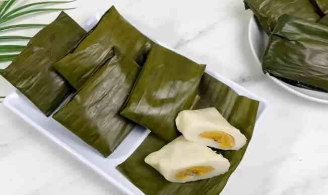
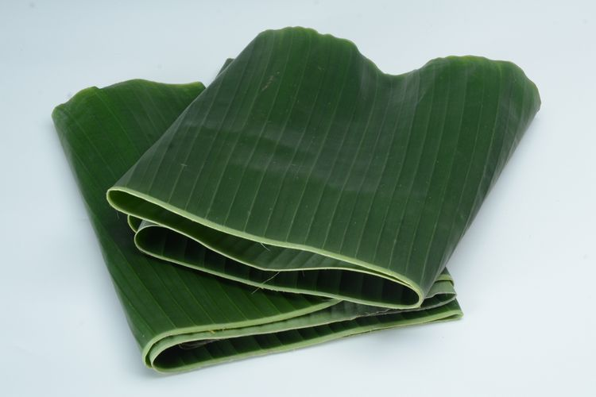

Resep Nagasari

Salah satu jajan pasar klasik ini selalu bikin kangen.makanan yang satu ini dibuat dari tepung beras saja hingga teksturnya lembut.
Nagasari atau kue nagasari sering juga disebut kue pisang. Jajan pasar ini dikenal sederhana tetapi aromanya
sangat harum karena ditambah dengan daun pandan dan dibungkus daun pisang.
Nagasari selalu dibungkus dengan daun pisang muda yang warnanya hijau kekuningan. Kini dibungkus daun pisang biasa,
bahkan ada yang memakai plastik tebal sebagai pembungkus.
Adonan nagasari ada yang ditambah sedikit tepung kanji sehingga agak kenyal. Tetapi nagasari klasik ini hanya memakai tepung beras saja.
Kalau mau bikin sendiri kamu bisa mengikuti resep nagasari dan tips membuatnya di bawah ini.
Bahan :
- 250 gram tepung beras
- 100 gram gula pasir
- 100 ml santan
- 1/2 sendok teh garam
- 1/2 sendok teh vanila
- 1/2 sendok teh daun pandan
- 1/2 sendok teh gula pasir
Cara Membuat :
- Kukus pisang kepok atau pisang tanduk hingga matang. Angkat dan dinginkan. Potong menyerong 1 cm. Sisihkan.
- Ambil setengah bagian santan, aduk dengan tepung beras hingga larut.
- Panaskan sisa santan dalam panci bersama gula pasir, daun pandan dan garam hingga panas.
- Tuangkan larutan tepung beras dan aduk-aduk hingga menjadi adonan yang kental dan mendidih. Matikan api.
- Ambil selembar daun pisang, olesi sedikit minyak di bagian tengahnya.
taruh 1 sendok makan penuh adonan tepung beras di bagian tengah, ratakan.
- Taruh sepotong pisang kukus di tengahnya, beri sedikit adonan di atasnya.
- Gulung lalu lipat kedua ujungnya hingga rapi.
- Susun di dalam kukusan yang sudah dipanaskan dan kukus selama 30 menit
- Angkat dan dinginkan.
Tips membuat nagasari pisang tepung beras:

- Jika daun pisang masih kaku, bisa dijemur sebentar hingga layu atau panggang sebentar di atas api
hingga daun pisang layu dan tidak pecah saat dipakai untuk membungkus. Kalau ada bisa dipakai daun pisang muda.
- Untuk mendapatkan kue nagasari yang gurih lembut sebaiknya gunakan santan kelapa segar.
- Kekentalan adonan bisa disesuaikan dengan kondisi tepung beras. Jika tepung beras terlalu kering bisa ditambahkan sedikit santan lagi.